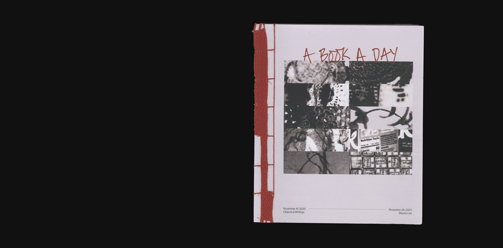
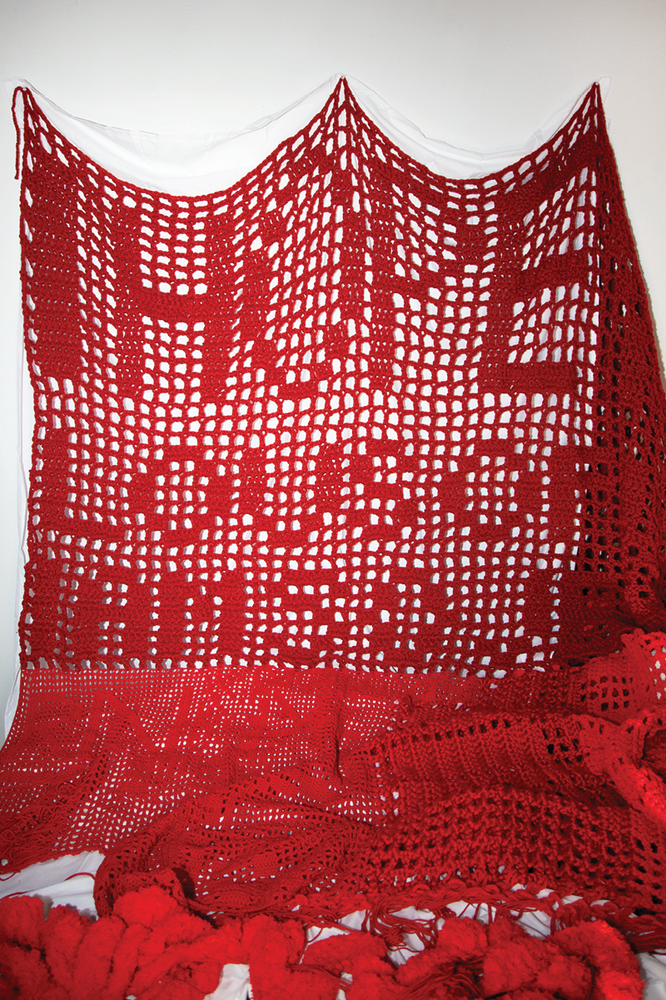

A collection of 11 book-objects, 10 concrete poems, and a freehanded filet crochet blanket.
A personal study on radical okay-ness in the wake of capitalism.
featured in Parsons 2024 CD Thesis Collection
advised by Prin Limphongpand &
Hsien-Yin Ingrid Chou
photography by Elisha Abaya

I started with a challenge: a book a day. I focused on materiality, grabbing from my surroundings, and allowed myself freedom and abstraction. My books became a reflection of my consumption and waste. These books were then paired with concrete poems formed from daily journal entries.
I created an animation demonstrating the words I pulled from my original text to create my poems.
view full animation here

The second part of my project involved a freehanded blanket using filet crochet. The labor of this craft is contrasted against my inability to execute simpler, everyday tasks.
8'x9'

exhibition display at Parsons CD Thesis Show